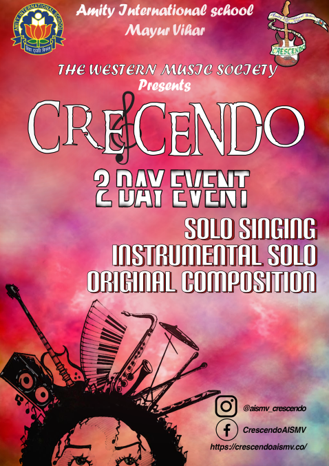
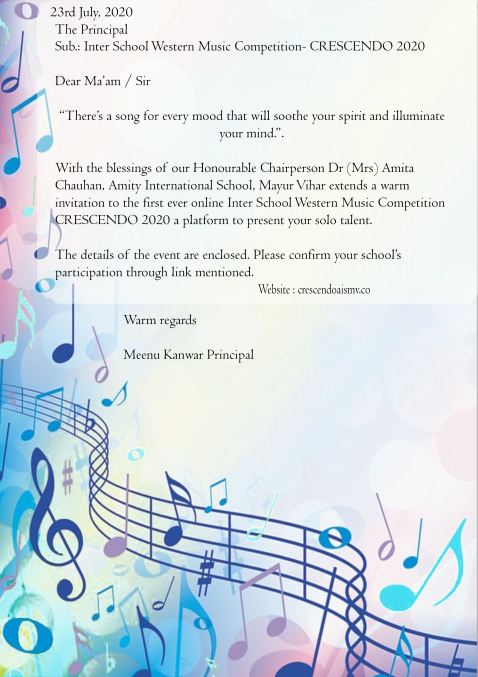

CRESCENDO 2020
To encourage budding musicians, the Western Music Society of Amity International
School, Mayur Vihar brings to you a virtual edition of the much awaited Crescendo
2020, a competition that has returned yet again, with the aim to give talented
individuals an opportunity to perform amongst other gifted young musicians and to
help them learn from the experience.
INSTRUCTIONS TO BE FOLLOWED
1. Before the registration a Microsoft Teams account using a Gmail Id is
to be made.
2. While registering for the event, kindly enter the email-Id linked with your
Microsoft Teams.
3. This email-Id would be added to the team of Crescendo 2020
competition where you will attend the event.
4. Kindly ensure you have a good network connection during the live
performance. (Wi-Fi would be preferred)
5. Keep yourself on mute and turn the camera off at all times to avoid any
kind of disturbance.
6. Microphone and camera should be turned on only when asked to
perform.
7. Make sure that the camera quality is good. (Audio and Video is
compulsory)
8. For communicating with the organizing team during the event, use the
chat box only.
GENERAL RULES AND REGULATIONS:
1. Participants should be in their regular school uniform or it will lead to negative
marking.
2. Registration is open from Thursday 23 rd July 2020
3. The registration must be done by Thursday 2 nd August 2020.
4. Students from classes 7-12 th (presently) can compete in the
competition.
5. A picture (front and back) of the school ID card is to be submitted while
registering on the site. (Last year’s ID cards will be accepted)
6. Prior to the performance, setup time will be given so there is no
disruption in between the performance.
7. For results, follow Crescendo’s official Instagram or Facebook page.
8. Winners will be given e-certificate through mail.
9. Host School will compete in the competition.
10. For registering go to our site https://crescendoaismv.co/
11. All participants must strictly adhere to the above mentioned rules. Thedecision of the judges will be final and binding. All schools are requested to
respect the same.
12. a) After registration, participants of each category will be contacted by the
organizing team.
b) A trial run for each category shall be scheduled a few days prior to the
event for which details will be given post registration.
This trial run shall acquaint the participants with MS Teams so that no
problems are faced on the day of the event.
13. Timings for the event 2p.m. to 5p.m.
14. First 20 schools to register will be selected for the event.
LIVE EVENTS
DAY 1 SOLO SINGING (10 th August 2020)
Judgement Criteria:
(i)Voice Quality (ii) Vocal Modulation and Improvisation (iii) Overall Performance (iv)
Synchronization.
Rules and Regulations for solo singing
1. NO karaoke track will be allowed however participants can use piano/guitar
track recorded by accompanists of their respective school or the singer can
play while singing.
2. Time allotted to every student is 4 minutes after which he or she will be
disqualified.
3. Only one entry per school is allowed.
DAY 2 INDIVIDUAL INSTRUMENTAL PERFORMANCE (11 th August 2020)
Judgment Criteria:
(i) Tonal Quality (ii) Overall Performance (iii) Technicality.
Rules And Regulations for instrumentalists
1. No sequence, prerecorded music and backing tracks should be
audible to the judges, if so the participant shall be disqualified from
that category. However, backing track can be played in
headphones to assist the participant while performing.
2. Metronome can be used by the participants.
3. Time allotted to every student is 2 minutes.
4. Please go through the rules and time limit very carefully. Adhering to time
is compulsory.
5. On exceeding 10 seconds, 10 marks will be
deducted and on exceeding 15 seconds, the
participant will be disqualified.
6. Only one participant per school is allowed for each instrument.
(E.g. Only Drummer A from XYZ school can participate in the
drumming category and another drummer from XYZ school
cannot participate in the same category.)
7. For keyboard and guitar digital sounds can be used.
8. Kindly ensure that the camera angle is such that the judges
are able to see the playing technique as well as the participant
with ease.
ORIGINAL COMPOSITION
Making Crescendo even more special this year, we are introducing a new
category-ORIGINAL COMPOSITION. Put on your thinking caps and get ready to
write, compose and produce a brand new song on the theme
“LIFE IN LOCKDOWN”.
Judgment Criteria:
(i) Originality (ii) Composition (iii) Lyrics
Rules and Regulations for Original Composition
1. Students are required to record an audio track of their original song on
the given theme.
2. Submission of the track-
Upload the track on Drive and provide the access to the same.
Submission of the link should be done on Crescendo’s Email ID
by 15 TH August 2020.
The subject of the Email should be “Entry for Original
Composition”. Also, include your school’s name in the Email.
3. The track should not exceed 3 minutes and 30 seconds. On exceeding
the time limit, the entry will not be judged.
Contact Details: E-mail ID:
crescendo.aismv@gmail.com
Teacher In charge: Ms. Alesha Mesquita , Mr. Ashley Vaz , Mob no – 9911677871
PRESIDENT- Ayan Sharma, Mob. No. - 8383821243